In the last section we looked at the economic model for supply and demand. We were particularly interested in the point of market equilibrium. In this section we will look at the model for revenue, cost and profit. As with the previous section, we will begin with assumptions that make as many things as possible linear.
Subsection2.2.1Revenue and a review of demand price
However, in the previous section we worked with two price functions, the supply price and the demand price. Since we can only make a sale if the consumer is willing to buy, we typically use the demand price in computing revenue. Our model is now
If the demand price is a linear function, then revenue is a quadratic function.
We previously noted that a linear demand price function has a negative slope. We should note the two limiting cases. If the slope of the demand curve is 0, the consumers have a fixed price they will pay for however much of the product is available. In this case the demand curve is a constant, so the revenue curve will be linear. This is referred to as a perfectly elastic market. The other limiting case is where the demand is for a fixed amount no matter what the price. In this case the demand curve is a vertical line and is not a function, so the revenue curve also fails to be a function of quantity.
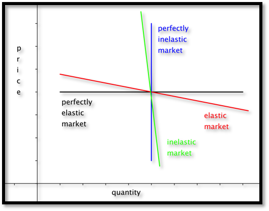
Obviously, we don’t expect to find the limiting cases in the real world. In real world cases the revenue function has a negative coefficient for the quadratic term and is a downward facing parabola.
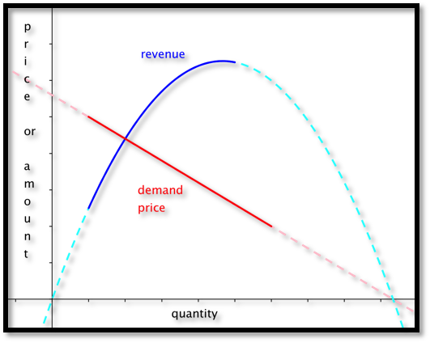
Example2.2.1.Finding Revenue From Linear Demand Price.
Figure2.2.2.Video presentation of this example
We have determined that the demand price function for widgets is
if the quantity is between 2000 and 8000. Find the revenue function and graph it over the region where it is defined.
Solution.
We set up a chart in Excel with revenue defined as \(\Sprice * \quantity\text{.}\)
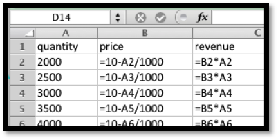
When we graph we note that the scales are quite different for price and revenue. Thus we want to use secondary axes to capture the scale of both price and revenue. We can also put different labels on the two vertical axes.
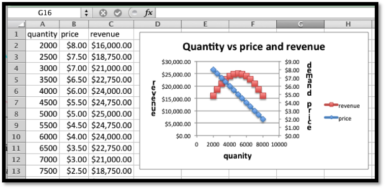
Subsection2.2.2Cost
Once again we will start with a simplified model for cost.
For our (simplified) model we will break costs into fixed costs and variable costs.
Fixed costs include the costs of being in business. They might include license fees, rent for a store or plant, and the cost of furnishings and equipment.
Variable costs are tied to the amount you produce or sell. For a manufacturer they might include raw material or labor costs. For someone in sales they might include the cost of goods.
For our simplified model, we assume that variable costs are proportional to quantity. This makes our cost function linear.
For our simplified model variable costs= unit costs*quantity.
Thus costs= fixed costs + unit costs*quantity.
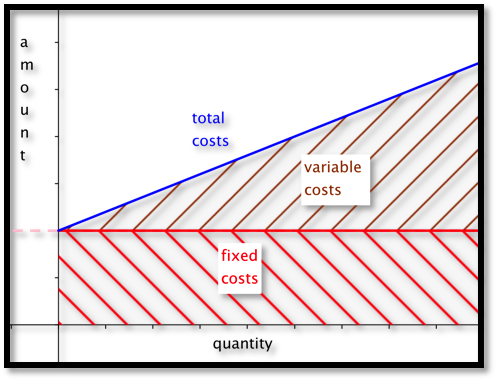
Example2.2.3.Finding Linear Cost.
We can set up a small gizmo manufacturing shop for $6,000. The raw materials for producing gizmos cost $14 per unit. Find the cost function for gizmo production. Find the cost of producing 2500 gizmos.
Solution.
The fixed costs are the \(y\) value of the \(y\)-intercept of the cost function. The per unit material cost is the slope of the function. We have
For our simple examples where cost is linear and revenue is quadratic, we expect the profit function to also be quadratic, and facing down. We will obviously be interested in the spots where the profit function either crosses the axis or reaches a maximum.
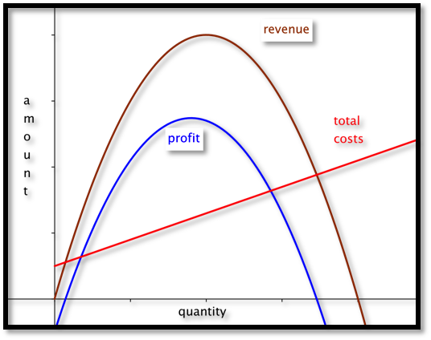
Figure2.2.4.Video presentation of the next two examples
Example2.2.5.Finding Profit.
We are interested in selling widgets. The demand price function is
It will cost $10,000 to keep our shop open before we consider the price of inventory. Our variable cost is the cost of buying the widgets from our wholesaler who will sell them to us for $8 a unit. Find a function for profit as a function of how many units we sell. Graph that function for quantities from 1000 to 10000.
Solution.
Using the methods from the previous examples, we write down the functions for revenues and costs.
We then use Excel to make a chart of values and a graph.
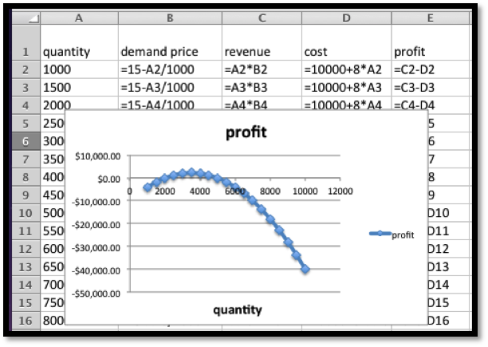
Subsection2.2.4Break-Even Point
The last example illustrates a reality of manufacturing and retail. If a business has a fixed cost or startup expense, it will have a loss if it does not sell enough.
The point at which revenues equal expenses (cost) is called the break-even point.
This is important in preparing a business proposal, because the bank will want to know if the break even point is a reasonable amount before it lends any money.
Example2.2.6.Find Break-Even Points.
Find break-even points for previous example. Explain what those points mean in practical terms.
Solution.
We look at the chart from the previous example.
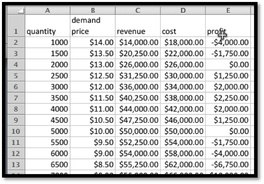
We can find break-even points by using Goal Seek and setting profit to 0 while changing quantity. In this case, we see that we have break-even points when the quantity is 2000 or 5000, since those numbers were already on our chart.
The first break even point tells us that, if our price is more than $13.00, we will not attract enough customers to be able to turn a profit. The second break even point says that is we bring our price down below $10, we will bring in enough customers, but our revenue will not cover expenses.
Example2.2.7.Repeat, Starting With Data.
Figure2.2.8.Video presentation of this example
We have the following data from the gizmo market, with quantity and costs measured in millions.
Quantity
7.81
10.07
11.99
13.84
15.80
Demand Price
$12.07
$9.05
$7.60
$6.64
$5.64
Cost
$60.05
$70.09
$79.98
$89.90
$99.83
Assuming that price and cost are well modeled by linear equations, find the break-even points and explain what they mean with units included in the explanation.
To find the break-even point when we are given data instead of an equation, we usually follow this procedure: Find the best fitting equations for price and cost. From those equations, produce formulas for revenue and profit. Use the formulas to find the break-even points using either algebra or Excel.
Solution.
We put the data into Excel and ask for best fitting lines.
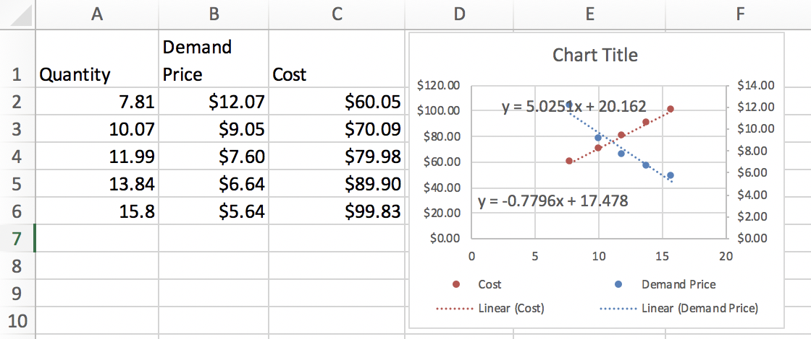
This produces the desired cost and price functions.
We enter these functions in new columns in the spreadsheet and then compute projective revenues and profit. We then use Goal Seek to find places where the projected profit is 0. The first break-even point tells us that we expect to break even if we sell 1.83 million units. We can do that by setting the price at $16.05. The second break-even point is at 14.15 million units. We reach that sales volume by lowering the price to $6.45. While we will have gained market share, we will no longer be making a profit.
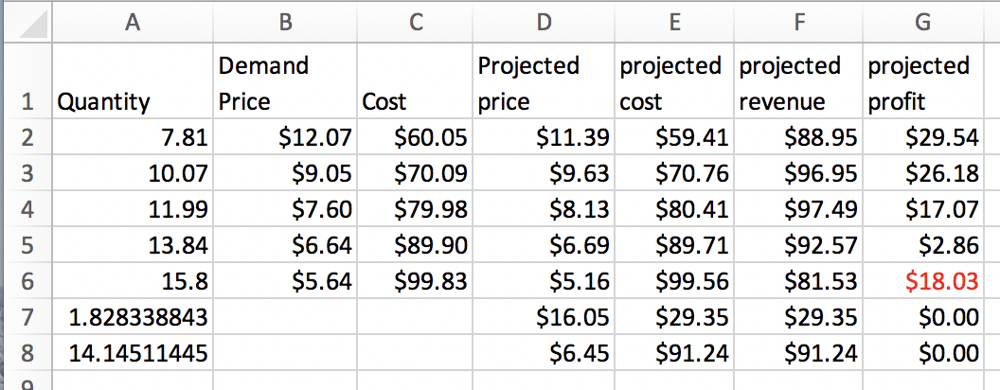
Subsection2.2.5Technical note
In business situations we often have cases where a change of quantity in the thousands only changes prices by pennies. Then, our coefficients are close to zero, and Excel may give formulas rounded to zero. In those cases we need to format the trendline to get more digits of accuracy.
Example2.2.9.Problems with using big numbers.
Figure2.2.10.Video presentation of this example
We want to explore an issue that arises our coefficients are very small. We will have to be concerned with the number of significant digits in our coefficients.
We repeat the previous example, but with quantity and cost measured directly, rather than in millions. We should get the same answers, since we are using the same data.
Quantity
7,810,000
10,070,000
11,990,000
13,840,000
15,800,000
Demand Price
$12.07
$9.05
$7.60
$6.64
$5.64
Cost
$60,050,000
$70,090,000
$79,980,000
$89,900,000
$99,830,000
We face the same tasks. Assuming that price and cost are well modeled by linear equations, find the break-even points and explain what they mean with units included in the explanation.
To find the break-even point when we are given data instead of an equation, we usually follow this procedure: Find the best fitting equations for price and cost. From those equations, produce formulas for revenue and profit. Use the formulas to find the break-even points using either algebra or Excel.
Solution.
We put the data into Excel and ask for best fitting lines.
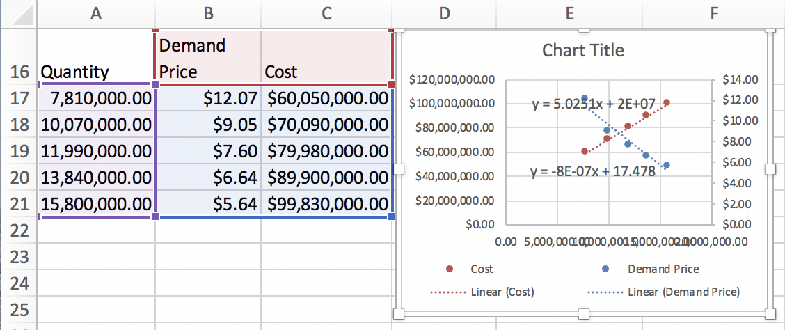
As expected, a coefficient of each equation has been shifted by a factor of 1,000,000.
These equations have only one digit of accuracy. In general, that will not be accurate enough.
We enter these functions in new columns in the spreadsheet and then compute projective revenues and profit. We then use Goal Seek to find places where the projected profit is 0. The first break-even point goes from 1.83 million at price of $16.05 to 1.82 million at a price of $1602. The second break even point goes from 14.15 million units at a price to $6.45 to 13.75 million at a price of $6.48.
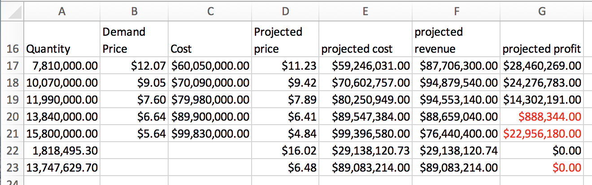
The solution is to right click (Command click on a mac) on the label and select “Format Trendline Label”. Then change category from general to number, and choose 10 decimal places. This gives us the equations:
We then go through the same process at get our original answers back.
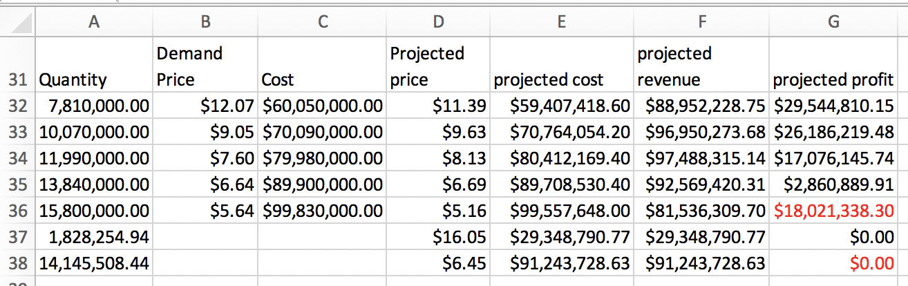
Reading Questions2.2.6Reading Check
1.Reading check, Modeling Revenue, Costs, and Profit.
This question checks your reading comprehension of the material is section 2.2, Modeling Revenue, Costs, and Profit, of Business Calculus with Excel. Based on your reading, select all statements that are correct. There may be more than one correct answer. The statements may appear in what seems to be a random order.
Profit = Costs - Revenue.
In real world cases the revenue function has a negative coefficient for the quadratic term and is a downward facing parabola.
The simple model for revenue is revenue =quantity*price.
In our simplified model, the profit function is linear.
We typically use the supply price in computing revenue.
In the real world variable costs are proportional to quantity.
We typically use the demand price in computing revenue.
Fixed costs include the costs of being in business. They might include license fees, rent for a store or plant, and the cost of furnishings and equipment.
For our simplified model, costs= fixed costs + unit costs*quantity.
The point at which revenues equal expenses (cost) is called the break-even point.
None of the above
Exercises2.2.7Exercises: Modeling Revenue, Costs, and Profit
1.Reading check, Modeling Revenue, Costs, and Profit.
This question checks your reading comprehension of the material is section 2.2, Modeling Revenue, Costs, and Profit, of Business Calculus with Excel. Based on your reading, select all statements that are correct. There may be more than one correct answer. The statements may appear in what seems to be a random order.
In our simplified model, the profit function is linear.
Profit = Costs - Revenue.
The point at which revenues equal expenses (cost) is called the break-even point.
Fixed costs include the costs of being in business. They might include license fees, rent for a store or plant, and the cost of furnishings and equipment.
We typically use the supply price in computing revenue.
We typically use the demand price in computing revenue.
The simple model for revenue is revenue =quantity*price.
In real world cases the revenue function has a negative coefficient for the quadratic term and is a downward facing parabola.
In the real world variable costs are proportional to quantity.
For our simplified model, costs= fixed costs + unit costs*quantity.
Solve \(\profit=-2 q^2+17q-10=0\text{.}\) We can do this with Excel or with Wolfram. The break even points are \(q = 0.6\) and \(q = 7.9\text{.}\)
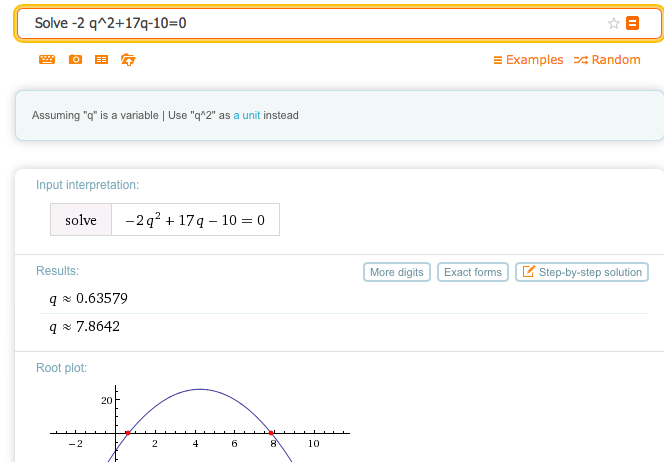
Graph the profit function over a domain that includes both break-even points. Add a textbox and label to identify the first break-even point.
If we had done the whole problem in Excel it would look like this:
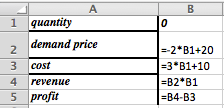
Entries in the cells before quick fill
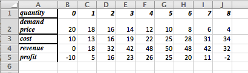
The table with \(q\) between 0 and 8
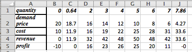
Goal Seek gives break even points at \(q = 0.64\) and \(q = 7.86\)
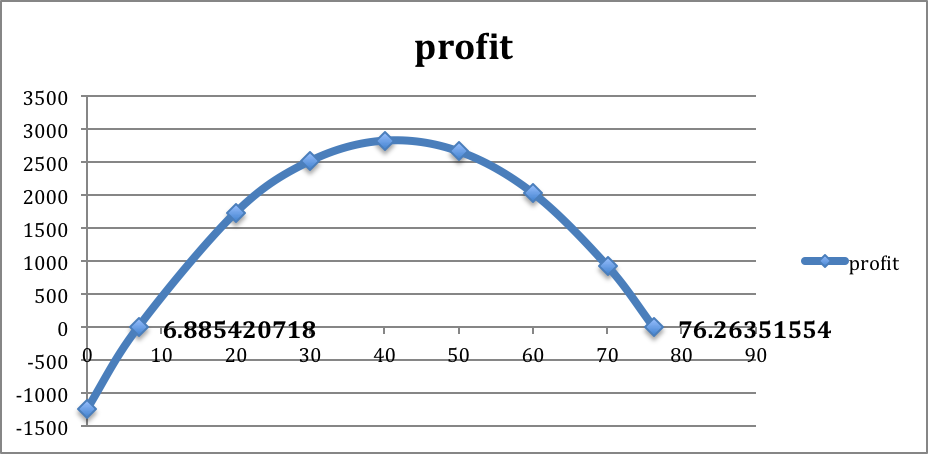
The graph produced in Excel. To create the labels: double click on one of the break-even points, go to “Chart Layout”, go to “Data Labels”. In this example we chose the “x-value”. Both break-even points were labeled to show where they are and what the values are in this problem.
3.
Given \(\Dprice=- \quantity/10+50\) and \(\cost=10 \quantity+1000\text{,}\) with \(q_0=300\text{.}\)
4.
Given \(\Dprice =-2.35 \quantity+250\) and \(\cost=54.6 \quantity+1234\text{,}\) with \(q_0=59\text{.}\)
Solution.
Identify the fixed and variable costs.
\(\text{Fixed cost} = \$1234\text{,}\) and the \(\text{variable cost} =\$54.60\) (per unit)
Evaluate cost, demand price, revenue, and profit at \(q_0\text{.}\)
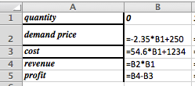
Entries in the cells before quick fill
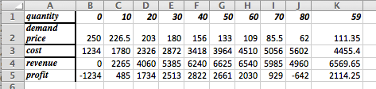
Table plus extra column for the value \(q = 59\text{.}\)
At \(q =59\text{,}\)\(\cost = \$4455.40\text{,}\)\(\Dprice = \$111.35\text{,}\)\(\revenue = \$6569.65\text{,}\) and \(\profit = \$2114.25\)
Find all break-even points.
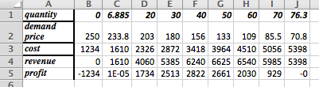
Table plus extra column for the value \(q = 59\)
The break-even points are \(q = 6.9\) and \(q = 76.3\)
Graph the profit function over a domain that includes both break-even points. Add a textbox and label to identify the first break-even point.
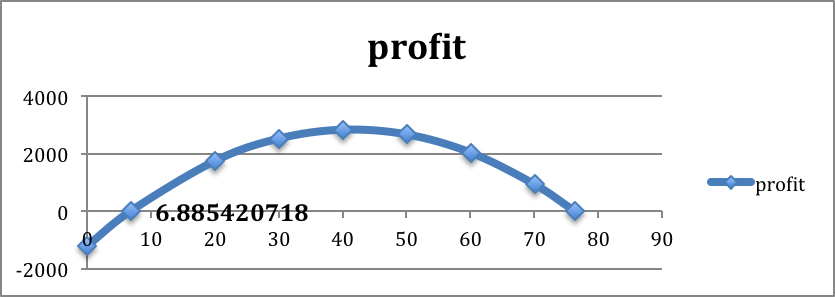
The graph produced in Excel. To create the labels: double click on one of the break-even points, go to “Chart Layout”, go to “Data Labels”. In this example we chose the “x-value”. Both break-even points were labeled to show where they are and what the values are in this problem.
5.
Given \(\Dprice=-0.0023 \quantity+9\) and \(\cost=1.39 \quantity+1398.7\text{,}\) with \(q_0=687\text{.}\)
6.
Given demand price and cost are the linear functions that best fit the data below and that \(q_0=75\text{.}\)
Quantity
50
100
Demand price
10
8
Cost
300
450
Solution.
If the table only has 2 data points, Excel can get confused wether the data is in rows or columns. We duplicated one column to get the data plotted correctly.
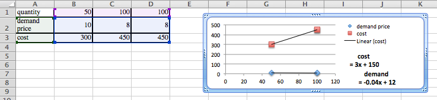
Identify the fixed and variable costs.
\(\text{Fixed cost} = \$150\text{,}\) and the \(\text{variable cost} =\$3\) (per unit).
Evaluate cost, demand price, revenue, and profit at \(q_0\text{.}\)
At \(q =75\text{,}\)\(\cost = \$375\text{,}\)\(\Dprice = \$9\text{,}\)\(\revenue = \$675\text{,}\) and \(\profit = \$300\)
Find all break-even points.
The break-even points, found with goal seek, are \(q = 18.127\) and \(q = 206.873\)
Graph the profit function over a domain that includes both break-even points. Add a textbox and label to identify the first break-even point.
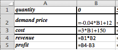
Entries in the cells before quick fill
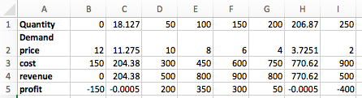
Table plus extra columns for the brek even points
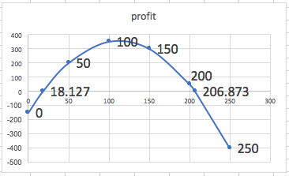
The graph produced in Excel. To create the labels: double click on one of the break-even points, go to “Chart Layout”, go to “Data Labels”. In this example we chose the “x-value”. Both break-even points were labeled to show where they are and what the values are in this problem.
7.
Given demand price and cost are the linear functions that best fit the data below and that \(q_0=110\text{.}\)
Quantity
60
70
90
100
Demand Price
19
16
Cost
460
540
8.
Given demand price and cost are the linear functions that best fit the data below and that \(q_0=75\text{.}\)
Quantity
4356
4792
6503
7038
Demand price
$1.10
$.98
Cost
$1190
$1860
Solution.
We plot the data, and find the linear models for demand and cost.
Given the demand price and the cost we create a table using the formulas and we also include a row for the \(\revenue =( \Dprice * \quantity)\) and \(\profit =(\revenue - \cost)\)
Identify the fixed and variable costs.
The fixed cost is - $169.35, and the variable cost is $0.3121 per unit of quantity. (That the fixed costs are negative should make us suspicious that we are outside the useful domain of our cost function.)
Evaluate cost, demand price, revenue, and profit at \(q_0\text{.}\)
At \(q = 75\) we have that \(\cost = - \$146\text{,}\)\(\Dprice = \$1.35\text{,}\)\(\revenue = \$101.42\text{,}\) and \(\profit = \$247\text{.}\)
Find all break-even points.
Re-compute profit for a different range of quantities and we get
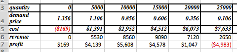
Goal Seek using the quantity of 20000 as the basis gives a break-even point at \(q= 21,039\text{.}\) The other place where the profit is 0 occurs for \(q = -161\text{.}\)
Graph the profit function over a domain that includes both break-even points. Add a textbox and label to identify the first break-even point.
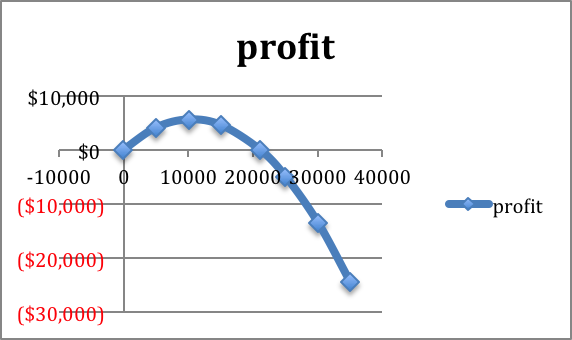
The profit function shows the break-even points close to 0 (-161) and near 20,000 (21,039)
9.
Given demand price and cost are the linear functions that best fit the data below and that \(q_0=7500\text{.}\)
Quantity
5378
7984
8352
Demand price
$12.00
$10.00
Supply price
$31,100
$45,100
10.
Mary has been put in charge of a school function. She estimates that there is a fixed cost of $1000 for the site plus a cost of $5 per person that attends. If she charges $15 a ticket she can sell 250 tickets, but if she lowers the price to $10 she can sell 500 tickets. Assuming the demand price is linear, what price should she charge to break even while maximizing attendance?
Solution.
The description of the cost function states that the fixed cost is $1000, and the variable cost is $5, so the cost function is \(\cost=5 q+1000\text{.}\)
Two points are given for the price function: \((q_1 ,p_1 )=(250,15)\) and \((q_2 ,p_2 )=(500,10)\text{.}\) Hence the slope is \(m= (15-10)/(250-500)= -5/250= -1/50=-0.02\text{.}\)
Then the demand price function is \((p-p_0 )= m (q-q_0)\) Hence